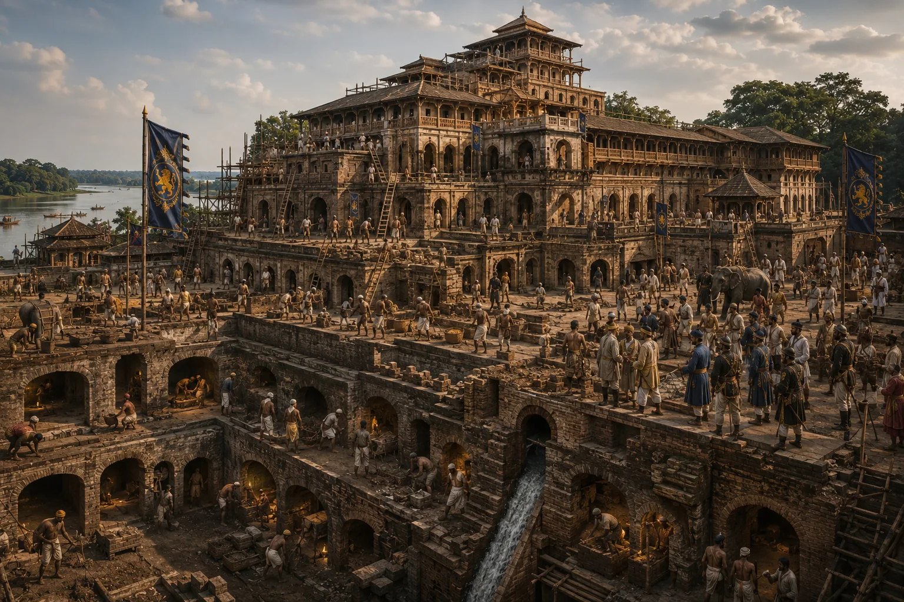

Expansion of the Grand Talatal Ghar Palace
1751–1765 · The Tungkhungia kings

Rajeswar Singha expands Talatal Ghar into a 7-storied architectural wonder (4 above ground, 3 underground) equipped with secret evacuation tunnels to Dikhou river.
Sources have not yet been catalogued for this record.
People: Rajeswar Singha (Suremphaa)
Open this scene in the interactive archive · Follow this event on MAP